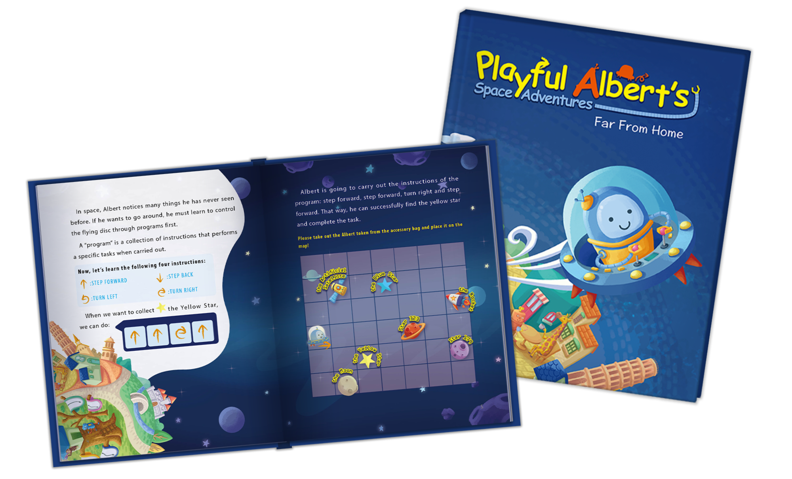
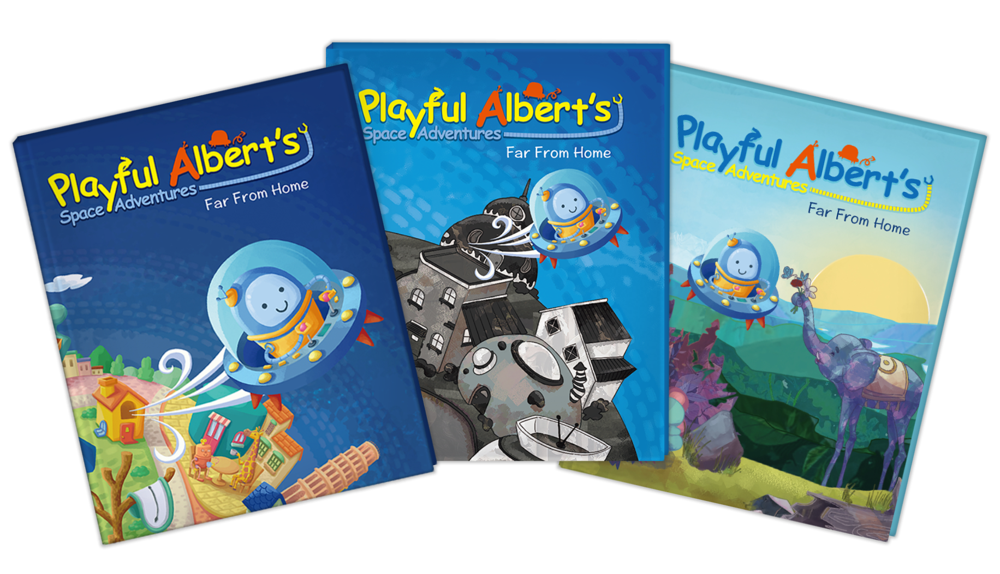

Hello, we are a team that enthusiastic in coding education. We believe that in the future world, everyone should know a little about coding . That’s why we are developing a very special story book that could actually teach kids how to code in the AR world !
With coding knowledge, students better understand the world around them
Coding improves problem solving Even that there are some lessons and educational robots / developing sandbox. Kids still don’t know why they should code, or what to code. The core of those problems is “the lack of mission / motivation”. The true value of programming is “problem solving” and “creating”. That’s why the skill is so important now. But most of the kids might not be interested in problems like “how to make a better accountant program” or “how to connect peoples who has the same habit more efficiently through mobile app”. That’s why teaching little kids to code is so hard.
Kids might not be interested in practical problems, but we sure that they love games and stories! That why we are composing a storybook with attractive characters, meaningful story, exquisite illustration. We hope kids would emerge into the story world and make connection to the characters, bring the motivations like “save the forest” or “find the way home” to kids.
We also design a easy-to-learn, easy-to-use coding system which based on the famous “Turing Machine”. Through the coding system, kids can start “coding” without knowing intimidating programming instructure, just play with some simple symbols. Any 5up kids could get start coding in 5 mins and make our character “Albert” moving ! Furthermore, with our APP, Albert will “jump out” of the book and follow the code. Make the coding experience even more fun!